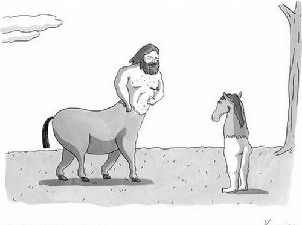
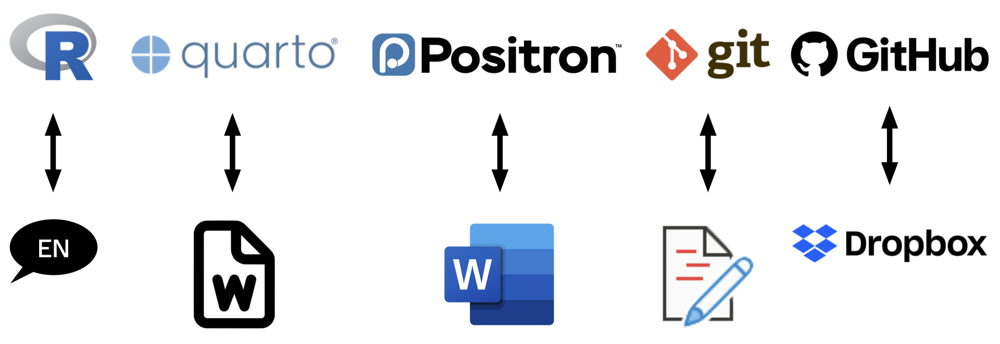
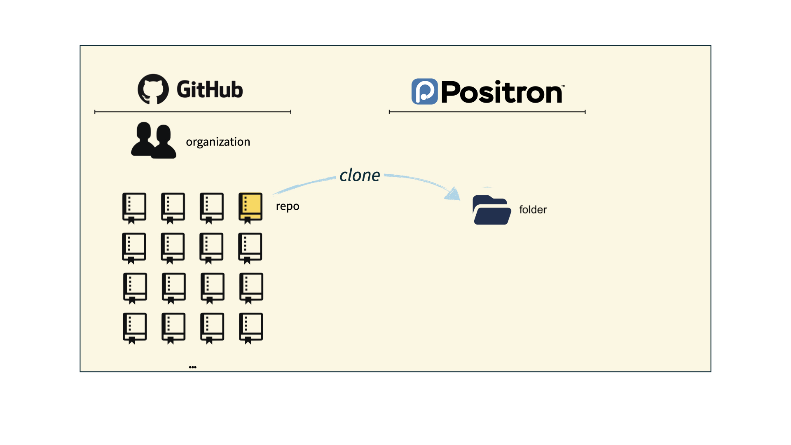
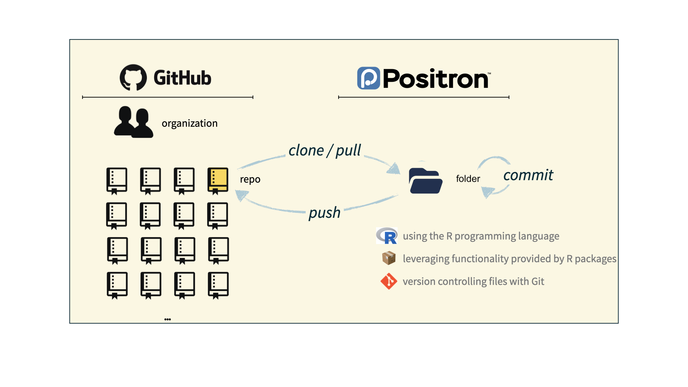

Hello, World!
Lecture 1
Duke University
STA 199 - Fall 2026
August 24, 2026
Warm up
While you wait…
Fill out the Getting to know you survey if you haven’t yet done so.
Meet (some of the) course team
- Mary Knox (Course coordinator)
- Robbie Hao (MS)
- Hyunjin Lee (UG)
- Max Niu (UG)
From last time: Policies and support
Diversity, inclusion, and belonging
It is my intent that students from all diverse backgrounds and perspectives be well-served by this course, that students’ learning needs be addressed both in and out of class, and that the diversity that the students bring to this class be viewed as a resource, strength and benefit.
- If you haven’t yet done so, fill out the Getting to know you survey.
- If you feel like your performance in the class is being impacted by your experiences outside of class, please don’t hesitate to come and talk with me. I want to be a resource for you. If you prefer to speak with someone outside of the course, your advisors, and deans are excellent resources.
- I (like many people) am still in the process of learning about diverse perspectives and identities. If something was said in class (by anyone) that made you feel uncomfortable, please talk to me about it.
Access and accommodations
For disability accommodations, register with the Student Disability Access Office (SDAO) and provide documentation related to your needs; SDAO will work with you to determine what accommodations are appropriate.
Accommodations are not retroactive, and cannot be provided until I have received your Faculty Accommodation Letter – so start the process early.
Accommodations for exams must be arranged through SDAO, and exams with accommodations must be taken in the testing center.
Athletic travel conflicts and religious holidays: Submit requests for accommodations at the beginning of the semester so we can make suitable arrangements well in advance.
I am committed to making all course materials accessible and I’m always learning how to do this better. If any course component is not accessible to you in any way, please don’t hesitate to let me know.
Late work, waivers, lecture recordings, regrades…
We have policies!
Read about them on the course syllabus and refer back to them when you need it
Two that students often miss:
- Lecture recordings: available for excused absences only – submit the request form within 24 hours of the missed lecture, with documentation
- Regrade requests: on Gradescope, within one week of an assignment being returned; note that the entire assignment may be regraded
Participate 💻📱
Who should you email if you want to use your one-time late penalty waiver on a homework assignment?

Scan the QR code or go to wooclap.com. Log in with your Duke NetID and enter the code OQPLQEK.
Use of AI tools
AI tools are not a replacement for understanding the material, but they can help you learn it.
Reading code and writing code are skills that take time and practice to develop - both are essential.
The nature of these tools is changing rapidly - autocomplete vs. chatbots vs. agentic tools.
Centaurs vs. reverse centaurs

Image source: Hill Cantons, for more details see Cory Doctorow’s commentary Reverse Centaurs in Locus Magazine.
Use of AI tools: the rules
You may use AI as a resource as you complete assignments, but not to answer the exercises for you.
- Disclose your use in the AI disclosure statement accompanying the assignment
- Cite what you use: the tool, the model, the date you ran the prompt, and a link to the full transcript
- Don’t paste assignment prompts into AI tools – write your own prompt that reflects your understanding
- Don’t paste AI output into your assignment – edit it so it carries your voice and matches course syntax, terminology, and style
Important
Any content identified as AI-generated but not cited as such will be treated as plagiarism, resulting in an automatic 0 for the relevant portion of the assignment.
Academic integrity
To uphold the Duke Community Standard:
I will not lie, cheat, or steal in my academic endeavors;
I will conduct myself honorably in all my endeavors; and
I will act if the Standard is compromised.
A note on showing up and participating
This is a large “lecture” but with lots of opportunities and expectations for active learning, participation, and collaboration.
You are expected to show up and participate in all lectures and labs, though there are a good number of each you can miss without penalty.
It’s possible to read the books and watch the videos and get an exposure to the material we cover in the course without showing up, but the experience will be much less rich and you will likely miss out on a lot of learning. That’s why the assessments and workflows are designed to reward and reinforce active participation.
Feedback on Getting to know you survey
Century Course
Questions
- Is the course designed for students with no prior coding or statistics background?
- What is the balance between learning statistical concepts and programming in R? How often will students code?
- How should students use readings, videos, and other materials—and which are essential?
- What should students expect from discussion projects, collaboration, and required uploads?
- What will exams look like, and what practice or study materials will be available?
- Where can students get help, and what kinds of collaboration are appropriate?
- How does the course compare to COMPSCI 216 (Everything Data) and STA 323 (Statistical Computing)?
Concerns
- Dominant concern: lack of prior coding experience—especially learning R, syntax, troubleshooting, and technical tools such as GitHub.
- Keeping pace: worry about falling behind or being less prepared than classmates.
- Workload: concerns about labs, projects, time management, and other commitments.
- Assessment: questions about exams, grading, and effective study strategies.
- Smaller themes: group-project dynamics, large-lecture setting, and confidence with math/statistical terminology.
Seeing double 👀
We have (at least) EIGHT twins in the course this semester!
Toolkit
Learning goals
By the end of the course, you will be able to gain insight from data, reproducibly (with literate programming and version control) and collaboratively, using modern programming tools and techniques.
Computational toolkit
- Computing:
- Language: R
- IDE: Positron
- Packages: tidyverse (primarily), plus others
- Authoring: Quarto
- Version control:
- Tracking: Git
- Hosting and collaboration: GitHub
Reproducible data analysis
Reproducibility checklist
What does it mean for a data analysis to be “reproducible”?
Short-term goals:
- Are the tables and figures reproducible from the code and data?
- Does the code actually do what you think it does?
- In addition to what was done, is it clear why it was done?
Long-term goals:
- Can the code be used for other data?
- Can you extend the code to do other things?
Toolkit for reproducibility
- Scriptability – Coding as opposed to using a point-and-click tool \(\rightarrow\) R
- Literate programming – Code, narrative, output in one place, as opposed to copying and pasting code output into a document (e.g., Word or Google Doc) that contains the narrative \(\rightarrow\) Quarto
- Version control – Track changes with brief messages that describe those changes \(\rightarrow\) Git / GitHub
An analogy to English
Suppose you wanted to write an essay for a literature class.
- You would need to pick a language (e.g., English)
- and choose an interface to write your document with (such as Microsoft Word with a .docx word document)
- You also might want to use track changes to see edits you make
- and use a platform such as Google Drive to collaborate

R and Positron
R and Positron

- R is an open-source statistical programming language
- R is also an environment for statistical computing and graphics
- It’s easily extensible with packages
- Positron is a convenient interface for R called an IDE (integrated development environment), e.g. “I write R code in the Positron IDE”
- Positron is not a requirement for programming with R, but it’s very commonly used by R programmers and data scientists
R packages
Packages: Fundamental units of reproducible R code, including reusable R functions, the documentation that describes how to use them, and sample data1
As of 25 August 2026, there are 24,780 R packages available on CRAN (the Comprehensive R Archive Network)2
We’re going to work with a small (but important) subset of these!
Tour: R + Positron
Sit back and enjoy the show!
A short list
(for now)
of R essentials
Packages
- Installed with
install.packages(), once per system:
Note
We already pre-installed many of the package you’ll need for this course, so you might go the whole semester without needing to run install.packages()!
- Loaded with
library(), once per session:
── Attaching core tidyverse packages ────────────── tidyverse 2.0.0 ──
✔ dplyr 1.2.1 ✔ readr 2.2.0
✔ forcats 1.0.1 ✔ stringr 1.6.0
✔ ggplot2 4.0.3 ✔ tibble 3.3.1
✔ lubridate 1.9.5 ✔ tidyr 1.3.2
✔ purrr 1.2.2
── Conflicts ──────────────────────────────── tidyverse_conflicts() ──
✖ dplyr::filter() masks stats::filter()
✖ dplyr::lag() masks stats::lag()
ℹ Use the conflicted package (<http://conflicted.r-lib.org/>) to force all conflicts to become errorsPackages, an analogy
If data analysis was cooking…
Installing a package would be like buying ingredients from the store
Loading a package would be like getting the ingredients out of your pantry and setting them on your counter top to be used
tidyverse
aka the package you’ll hear about the most…
- The tidyverse is an opinionated collection of R packages designed for data science
- All packages share an underlying philosophy and a common grammar
Data frames and variables
- Each row of a data frame is an observation
- Each column of a data frame is a variable
penguins data frame
Rows: 211 Columns: 19
── Column specification ──────────────────────────────────────────────
Delimiter: ","
chr (3): section, stats_exp, prog_exp
dbl (1): anonymous_id
lgl (15): learn_best_reading, learn_best_videos, learn_best_hands_...
ℹ Use `spec()` to retrieve the full column specification for this data.
ℹ Specify the column types or set `show_col_types = FALSE` to quiet this message.section
[1] "02L" "04L"
[3] "05L" "10L"
[5] "07L" "08L"
[7] "02L" "04L"
[9] "01L" "09L"
[11] "08L" "01L"
[13] "04L" "06L"
[15] "07L" "08L"
[17] "08L" "06L"
[19] "09L" "09L"
[21] "09L" "10L"
[23] "06L" "09L"
[25] "07L" "08L"
[27] "04L" "08L"
[29] "01L" "08L"
[31] "02L" "06L"
[33] "10L" "01L"
[35] "07L" "01L"
[37] "09L" "03L"
[39] "04L" "07L"
[41] "04L" "09L"
[43] "06L" "10L"
[45] "01L" "06L"
[47] "09L" "09L"
[49] "05L" "05L"
[51] "01L" "08L"
[53] "09L" "03L"
[55] "09L" "10L"
[57] "02L" "10L"
[59] "08L" "05L"
[61] "03L" "08L"
[63] "05L" "10L"
[65] "05L" "10L"
[67] "02L" "09L"
[69] "06L" "10L"
[71] "04L" "01L"
[73] "01L" "03L"
[75] "03L" "04L, STA 199CCL.05L.Fa26"
[77] "10L" "10L"
[79] "03L" "10L"
[81] "09L" "07L"
[83] "05L" "01L"
[85] "03L" "03L"
[87] "08L" "02L"
[89] "07L" "08L"
[91] "05L" "06L"
[93] "03L" "09L"
[95] "07L" "02L"
[97] "01L" "08L"
[99] "10L" "01L"
[101] "10L" "06L"
[103] "05L" "08L"
[105] "07L" "05L"
[107] "02L" "03L"
[109] "08L" "05L"
[111] "06L" "02L"
[113] "04L" "03L"
[115] "05L" "08L"
[117] "06L" "01L"
[119] "04L" "05L"
[121] "04L" "01L"
[123] "01L" "01L"
[125] "06L" "03L"
[127] "01L" "03L"
[129] "04L" "08L"
[131] "03L" "04L"
[133] "08L" "07L"
[135] "04L" "07L"
[137] "02L" "08L"
[139] "01L" "10L"
[141] "07L" "10L"
[143] "09L" "04L"
[145] "01L" "09L"
[147] "08L" "01L"
[149] "06L" "08L"
[151] "06L" "09L"
[153] "02L" "02L"
[155] "01L" "08L"
[157] "09L" "02L"
[159] "07L" "08L"
[161] "07L" "07L"
[163] "02L" "02L"
[165] "08L" "09L"
[167] "06L" "09L"
[169] "09L" "06L"
[171] "01L" "02L"
[173] "10L" "07L"
[175] "08L" "02L"
[177] "03L" "02L"
[179] "03L" "06L"
[181] "04L" "09L"
[183] "06L" "03L"
[185] "03L" "07L"
[187] "05L" "04L"
[189] "04L" "03L"
[191] "02L" "09L"
[193] "09L" "10L"
[195] "10L" "10L"
[197] "06L" "05L"
[199] "02L" "01L"
[201] "05L" "02L"
[203] "09L" "04L"
[205] "10L" "06L"
[207] "05L" "02L"
[209] "08L" "02L"
[211] "01L" Participate 💻📱
Scan the QR code or go to wooclap.com. Log in with your Duke NetID and enter the code OQPLQEK.
flipper_length_mm
This can be fixed by using survey$section.
[1] "02L" "04L"
[3] "05L" "10L"
[5] "07L" "08L"
[7] "02L" "04L"
[9] "01L" "09L"
[11] "08L" "01L"
[13] "04L" "06L"
[15] "07L" "08L"
[17] "08L" "06L"
[19] "09L" "09L"
[21] "09L" "10L"
[23] "06L" "09L"
[25] "07L" "08L"
[27] "04L" "08L"
[29] "01L" "08L"
[31] "02L" "06L"
[33] "10L" "01L"
[35] "07L" "01L"
[37] "09L" "03L"
[39] "04L" "07L"
[41] "04L" "09L"
[43] "06L" "10L"
[45] "01L" "06L"
[47] "09L" "09L"
[49] "05L" "05L"
[51] "01L" "08L"
[53] "09L" "03L"
[55] "09L" "10L"
[57] "02L" "10L"
[59] "08L" "05L"
[61] "03L" "08L"
[63] "05L" "10L"
[65] "05L" "10L"
[67] "02L" "09L"
[69] "06L" "10L"
[71] "04L" "01L"
[73] "01L" "03L"
[75] "03L" "04L, STA 199CCL.05L.Fa26"
[77] "10L" "10L"
[79] "03L" "10L"
[81] "09L" "07L"
[83] "05L" "01L"
[85] "03L" "03L"
[87] "08L" "02L"
[89] "07L" "08L"
[91] "05L" "06L"
[93] "03L" "09L"
[95] "07L" "02L"
[97] "01L" "08L"
[99] "10L" "01L"
[101] "10L" "06L"
[103] "05L" "08L"
[105] "07L" "05L"
[107] "02L" "03L"
[109] "08L" "05L"
[111] "06L" "02L"
[113] "04L" "03L"
[115] "05L" "08L"
[117] "06L" "01L"
[119] "04L" "05L"
[121] "04L" "01L"
[123] "01L" "01L"
[125] "06L" "03L"
[127] "01L" "03L"
[129] "04L" "08L"
[131] "03L" "04L"
[133] "08L" "07L"
[135] "04L" "07L"
[137] "02L" "08L"
[139] "01L" "10L"
[141] "07L" "10L"
[143] "09L" "04L"
[145] "01L" "09L"
[147] "08L" "01L"
[149] "06L" "08L"
[151] "06L" "09L"
[153] "02L" "02L"
[155] "01L" "08L"
[157] "09L" "02L"
[159] "07L" "08L"
[161] "07L" "07L"
[163] "02L" "02L"
[165] "08L" "09L"
[167] "06L" "09L"
[169] "09L" "06L"
[171] "01L" "02L"
[173] "10L" "07L"
[175] "08L" "02L"
[177] "03L" "02L"
[179] "03L" "06L"
[181] "04L" "09L"
[183] "06L" "03L"
[185] "03L" "07L"
[187] "05L" "04L"
[189] "04L" "03L"
[191] "02L" "09L"
[193] "09L" "10L"
[195] "10L" "10L"
[197] "06L" "05L"
[199] "02L" "01L"
[201] "05L" "02L"
[203] "09L" "04L"
[205] "10L" "06L"
[207] "05L" "02L"
[209] "08L" "02L"
[211] "01L" function(argument)
Functions are (most often) verbs, followed by what they will be applied to in parentheses:
trimmed mean()
Help
Object documentation can be accessed with ?
Toolkit: Version control and collaboration
Git and GitHub

- Git is a version control system – like “Track Changes” features from Microsoft Word, on steroids
- It’s not the only version control system, but it’s a very popular one

GitHub is the home for your Git-based projects on the internet – like DropBox but much, much better
We will use GitHub as a platform for web hosting and collaboration (and as our course management system!)
Versioning - done badly

Versioning - done better

Versioning - done even better
with human readable messages

How will we use Git and GitHub?

How will we use Git and GitHub?

How will we use Git and GitHub?

How will we use Git and GitHub?

Git and GitHub tips
- There are millions of git commands – ok, that’s an exaggeration, but there are a lot of them – and very few people know them all. 99% of the time you will use git to add, commit, push, and pull.
- We will be doing Git things and interfacing with GitHub through Positron, but if you google for help you might come across methods for doing these things in the command line – skip that and move on to the next resource unless you feel comfortable trying it out.
- There is a great resource for working with git and R: happygitwithr.com. Some of the content in there is beyond the scope of this course, but it’s a good place to look for help.
Tour: Git + GitHub
Sit back and enjoy the show!
Quarto
Quarto
- Fully reproducible reports – each time you render the analysis is ran from the beginning
- Code goes in cells narrative goes outside of cells
- Optional: A visual editor for a familiar / Google docs-like editing experience
Wrap up
Tasks
Due tonight: Complete the Getting to know you survey if you haven’t yet done so.
Tomorrow: Show up to lab on time with a charged laptop and find your team and sit with them.
Before Monday:
- Complete the readings and watch the videos